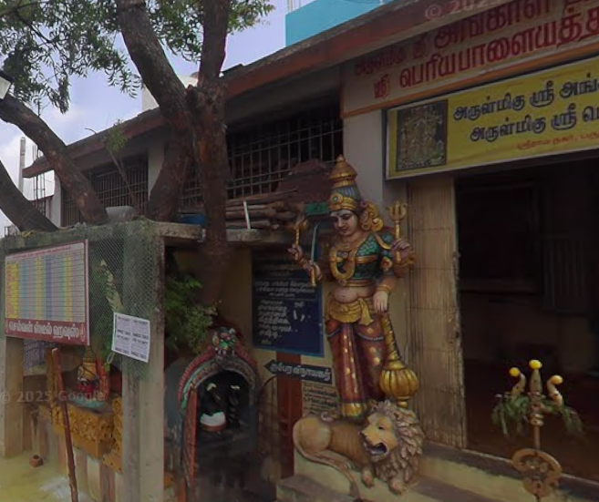

Angalamman_Temple
Angalamman_Temple
Angalamman Temple is a Hindu temple located in Paruthipattu, Avadi (Chennai) dedicated to Goddess Angalamman, a fierce form of the Mother Goddess.
The temple is known for its vibrant festivals, especially during the Tamil month of Aadi (July-August), when devotees gather in large numbers to seek blessings and participate in rituals.
The temple architecture features traditional Dravidian style with intricate carvings and sculptures, making it a significant religious and cultural landmark in the local community.
